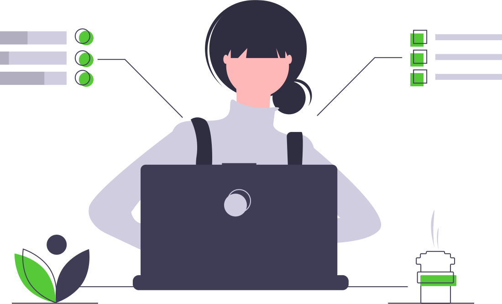

<ion-header class="ion-no-border">
  <ion-toolbar>
    <div slot="start" (click)=goToBack() class="backButton">
      <ion-icon name="arrow-back"></ion-icon>
    </div> 

    <ion-title mode="ios">
      <span>PHP</span>
    </ion-title>
  </ion-toolbar>
</ion-header>

<ion-content>

  <figure></figure>
  <ion-item *ngFor="let exercise of exercises">
  
    <ion-thumbnail slot="start">
      
    </ion-thumbnail>
    <ion-label>{{exercise.name}}</ion-label>

    <ion-text >
      <ion-icon name="flash"></ion-icon>
      {{exercise.experience}} XP
    </ion-text>
  
  
  </ion-item>

</ion-content>
